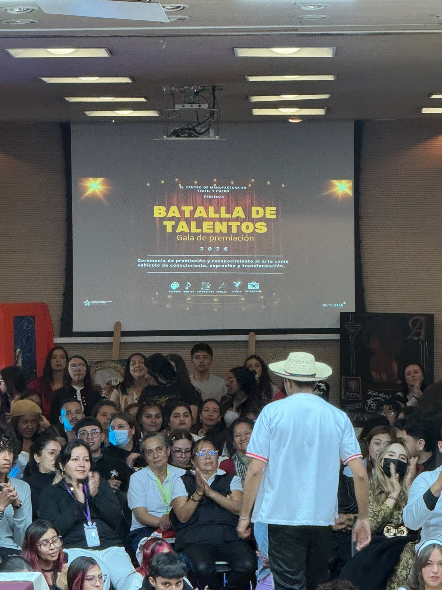
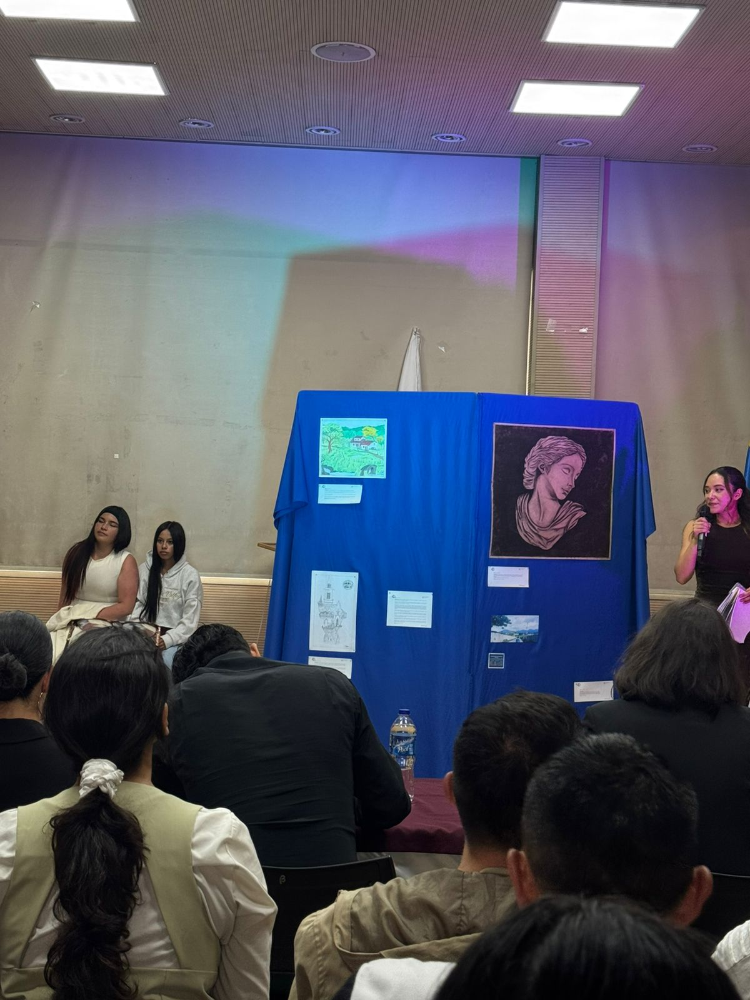
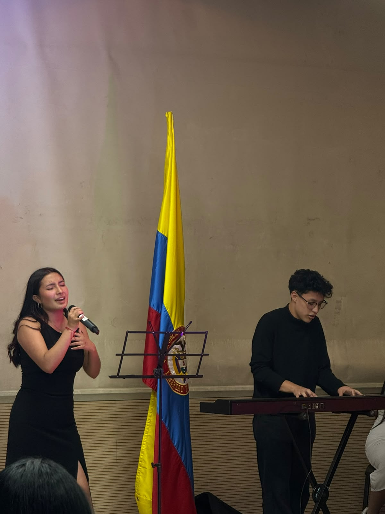
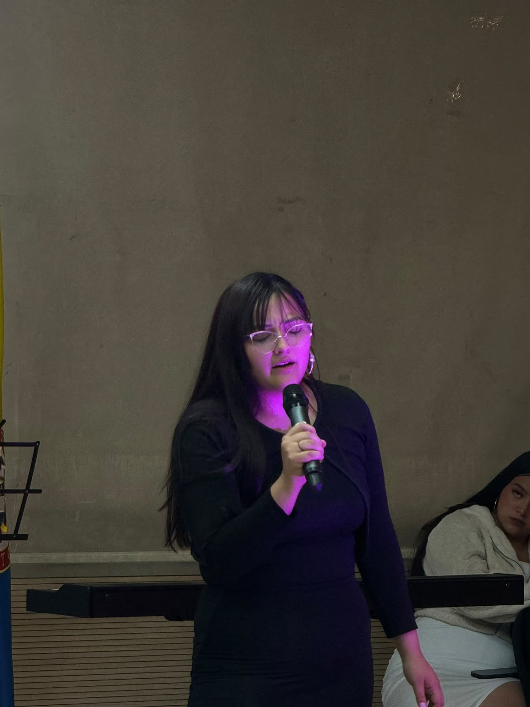

Centro de Manufactura en Textil y Cuero · SENA · Bogotá, 2026
Gala de Premiación · 2026
Ceremonia de reconocimiento al arte como vehículo de conocimiento,
expresión y transformación dentro de la comunidad académica.
Sobre el Evento
El Centro de Manufactura en Textil y Cuero del SENA presentó la Batalla de Talentos – Gala de Premiación 2026, un espacio dedicado al reconocimiento de las habilidades artísticas, culturales y creativas de toda la comunidad académica.
El evento reunió expresiones de danza, literatura, pintura, dibujo, fotografía, interpretación musical y canto, demostrando que el arte y la formación técnica no son opuestos: son dos lenguajes del mismo pensamiento creativo.
About the Event
The SENA Center of Manufacturing in Textile and Leather presented the Battle of Talents – Awards Gala 2026, a space dedicated to recognizing the artistic, cultural, and creative abilities of the entire academic community.
The event brought together dance, literature, painting, drawing, photography, musical performance, and singing — demonstrating that art and technical training are not opposites: they are two languages of the same creative thinking.

Bitácora Personal
Personal Log
Reflexión Personal
Asistir a la Batalla de Talentos transformó mi forma de entender el desarrollo de software. Presenciar a cada artista —en el escenario, con sus obras, con sus palabras— reveló que la creatividad no es un lujo del arte: es la esencia misma de programar.
Cada presentación fue una lección de experiencia de usuario: capturar la atención, mantener el interés, generar emoción. Exactamente lo mismo que buscamos cuando diseñamos una interfaz.
El arte comunica sin instrucciones. El buen código también.
Personal Reflection
Attending the Battle of Talents transformed the way I understand software development. Witnessing each artist —on stage, with their works, with their words— revealed that creativity is not a luxury of art: it is the very essence of programming.
Each performance was a lesson in user experience: capturing attention, maintaining interest, generating emotion. Exactly what we seek when designing an interface.
Art communicates without instructions. Good code does too.
El arte enseña que la belleza tiene estructura. El diseño UX/UI aplicado al software también.
Art teaches that beauty has structure. UX/UI design applied to software does too.
Cada acto artístico dependió de la colaboración. El desarrollo de software también.
Every artistic performance depended on collaboration. Software development does too.
La técnica sin creatividad produce código que funciona pero no comunica. El arte mostró el camino.
Technique without creativity produces code that works but doesn't communicate. Art showed the way.
El arte colombiano en escena fue un recordatorio de que la cultura enriquece cualquier producto digital.
Colombian art on stage was a reminder that culture enriches any digital product.
Evidencia Audiovisual
Audiovisual Evidence
Lo que se vivió
What was experienced
Seis disciplinas artísticas que transformaron un auditorio en un escenario de creatividad, talento y emoción.
Six artistic disciplines that transformed an auditorium into a stage of creativity, talent, and emotion.
El saxofón resonó con una precisión técnica impresionante. Cada nota fue calculada, como el código de un algoritmo que produce el resultado exacto esperado.
The saxophone resonated with impressive technical precision. Every note was calculated, like the code of an algorithm that produces the exact expected result.
Un músico domina su instrumento igual que un desarrollador domina su lenguaje. La práctica constante, los errores superados y la presentación final ante un público son experiencias compartidas entre el arte y la programación.
A musician masters their instrument just as a developer masters their language. Constant practice, overcome errors, and the final performance before an audience are shared experiences between art and programming.
Las voces que llenaron el auditorio construyeron narrativas emocionales. En el diseño web también construimos narrativas: las que guían al usuario a través de la experiencia.
The voices that filled the auditorium built emotional narratives. In web design we also build narratives: those that guide the user through the experience.
Un cantante conoce a su audiencia antes de subir al escenario. Un diseñador UX también: la empatía con el usuario es la partitura que define cada decisión de diseño.
A singer knows their audience before taking the stage. A UX designer does too: empathy with the user is the score that defines every design decision.
Las obras presentadas —desde un ángel alado hasta una composición tridimensional en rosa— demostraron que el arte visual es un lenguaje sin fronteras.
The works presented —from a winged angel to a three-dimensional pink composition— demonstrated that visual art is a language without boundaries.
La composición de un lienzo y el diseño de una interfaz comparten el mismo principio: el equilibrio visual. La cuadrícula de CSS Grid tiene 500 años de historia en las artes plásticas.
The composition of a canvas and the design of an interface share the same principle: visual balance. CSS Grid has 500 years of history in the visual arts.
La lectura frente al auditorio fue un acto de valentía y precisión. Cada palabra elegida con intención; cada pausa, un dato de ritmo. El buen código también es literatura técnica.
Reading before the auditorium was an act of courage and precision. Each word chosen with intention; each pause, a piece of rhythmic data. Good code is also technical literature.
Un escritor construye mundos con palabras. Un programador construye sistemas con sintaxis. Ambos necesitan claridad, coherencia y la capacidad de comunicar algo que el lector —o usuario— pueda experimentar.
A writer builds worlds with words. A programmer builds systems with syntax. Both need clarity, coherence, and the ability to communicate something the reader —or user— can experience.
El cuerpo como interfaz: cada movimiento comunica sin palabras. En UX, cada elemento en pantalla también se "mueve" para guiar al usuario hacia la acción correcta.
The body as interface: every movement communicates without words. In UX, every on-screen element also "moves" to guide the user toward the right action.
La danza es coreografía: pasos definidos que generan una experiencia fluida. Las animaciones CSS son exactamente eso: coreografías digitales diseñadas para guiar al usuario.
Dance is choreography: defined steps that generate a fluid experience. CSS animations are exactly that: digital choreographies designed to guide the user.

La fotografía es decisión visual: qué incluir, qué excluir, cómo iluminar. En el diseño de interfaces, cada píxel es también una decisión de luz, contraste y composición.
Photography is visual decision: what to include, what to exclude, how to illuminate. In interface design, every pixel is also a decision of light, contrast, and composition.
Un fotógrafo domina la regla de los tercios para crear equilibrio. Un diseñador web usa sistemas de cuadrícula por la misma razón: el ojo humano busca orden y armonía.
A photographer masters the rule of thirds to create balance. A web designer uses grid systems for the same reason: the human eye seeks order and harmony.
Evidencia Fotográfica
Photographic Evidence


Cierre Reflexivo
Closing Reflection
"El arte no es un adorno de la educación. Es su columna vertebral."
La Batalla de Talentos 2026 demostró que los espacios artísticos dentro de la formación académica no son pausas en el aprendizaje, sino su expresión más profunda. Cuando un aprendiz sube al escenario con un saxofón, un pincel o una hoja de papel, no está haciendo una pausa de su carrera técnica: la está viviendo desde su dimensión más humana.
Como aprendiz de ADSO, comprendí que el desarrollo de software no es solo escribir código que funcione. Es diseñar experiencias que comuniquen, que emocionen, que resuelvan problemas reales de personas reales. Y eso —esa capacidad de pensar en el otro— es exactamente lo que el arte entrena.
La creatividad es la habilidad más transversal del siglo XXI. No pertenece al arte ni a la tecnología: pertenece a quien entiende que ambas son, en esencia, la misma búsqueda —comunicar algo que valga la pena ser dicho.
Salí de ese auditorio siendo un mejor desarrollador. No porque aprendí un nuevo framework, sino porque recordé por qué construimos software: para las personas, con las personas, desde una mirada profundamente humana.
"Art is not an ornament of education. It is its backbone."
The Battle of Talents 2026 demonstrated that artistic spaces within academic training are not pauses in learning, but its deepest expression. When a learner takes the stage with a saxophone, a brush, or a sheet of paper, they are not pausing their technical career: they are living it from its most human dimension.
As an ADSO learner, I understood that software development is not just writing code that works. It is designing experiences that communicate, that move people, that solve real problems for real people. And that —that capacity to think of others— is exactly what art trains.
Creativity is the most transversal skill of the 21st century. It does not belong to art or to technology: it belongs to those who understand that both are, in essence, the same search — to communicate something worth being said.
I left that auditorium a better developer. Not because I learned a new framework, but because I remembered why we build software: for people, with people, from a deeply human perspective.
¿Quieres explorar el vocabulario artístico y técnico del evento?
Want to explore the artistic and technical vocabulary of the event?
Ir al Glosario Go to Glossary